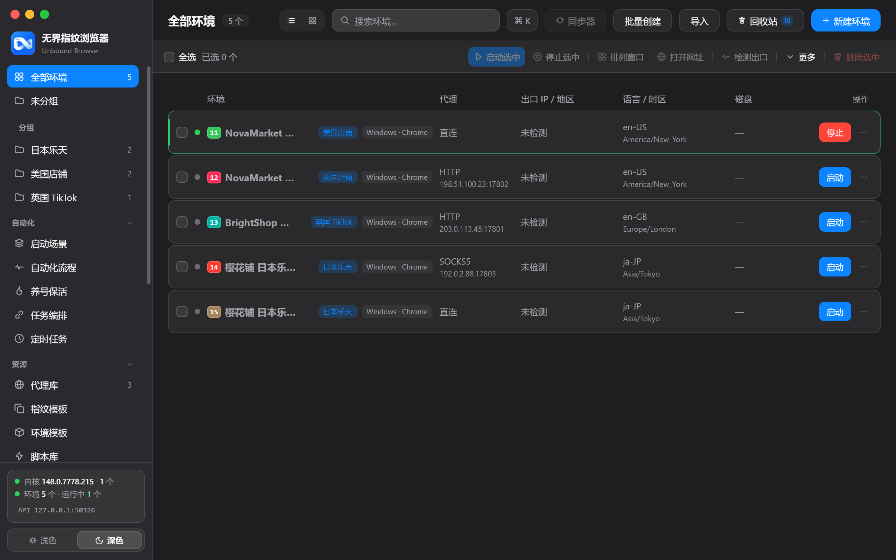

系统
系统设置
全局偏好与安全策略
全局偏好与策略的中枢：外观主题、启动行为、多开治理、网络与 API、AI 助手与安全策略，都在这一个页面完成。
能力一览
能为你做什么
外观主题
浅色 / 深色 / 跟随系统一键切换，夜间值守更舒适。
多开治理
全局并发上限与启动间隔，保护机器稳定运行。
本地 API
本地 HTTP API 的开关与访问控制，自动化接入更可控。
AI 助手配置
模型服务接入集中管理，随时切换服务与模型。
安全策略
主密码、锁屏与数据保护等安全选项。
界面实拍
真实界面，所见即所得

上手方式
几步就能用起来
-
1
打开系统设置，按分组浏览全部偏好。
-
2
调整选项，修改即时生效。
-
3
涉及安全的改动会要求二次确认。
在手册中继续深入
打开手册 →
「系统设置」的完整操作指南，见使用手册 08 · 安全与备份 章节。
准备好上手了吗？
下载安装包，几分钟内运行第一个隔离环境。